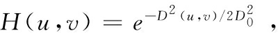
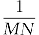
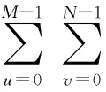
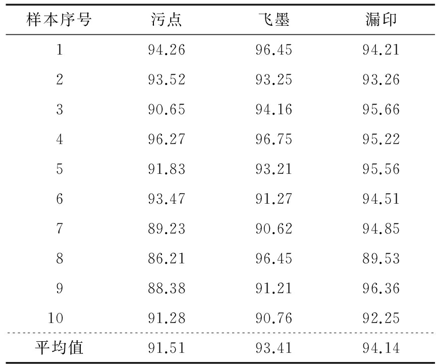

杨 洋
项辉宇
冷崇杰
薛 真
(北京工商大学材料与机械工程学院，北京 100048)
摘要：针对现有食品包装表面印刷缺陷分割算法中分割速度慢、精度低的问题，提出基于OpenCV实现图像差分与形态学处理结合的表面缺陷分割方法。分别对模版图像和待测图像进行高斯低通滤波运算；将预处理后的两幅图像作差分运算，得到其差分结果；采用形态学开运算来去除差分图像的噪声并标出目标缺陷位置。选取污点、飞墨、漏印3类缺陷样本各30组进行试验，结果表明：该法能够达到的平均准确率为91.51%，93.41%，94.14%，平均的分割时间仅为 46.6 ms。
关键词：食品包装；视觉检测；图像分割；OpenCV
对食品包装行业来说，其包装外观印刷中的漏印、飞墨、污点等缺陷，直接影响消费者对该商品的第一印象。随着现代商品包装工业的发展，人们对商品包装的外观设计要求越来越高。特别是随着商品市场的繁荣，人们更多地依赖于商品的外观来评价商品的档次。因此，在包装出厂的检测阶段，对外观缺陷的发现与剔除就显得尤为重要。包装外观缺陷检测的关键是准确且迅速地对包装表面图像进行分割，在此分割的基础上对目标缺陷进行采集与分析，从而提升包装印刷缺陷产品在线剔除的自动化水平。缺陷分割是指将感兴趣的缺陷目标从捕获的众多图像背景信息(如轮廓、颜色、形状、亮度)中分离出来，使缺陷成为分析和处理对象的过程，是视觉检测的关键。
目前，图像分割算法主要有：阈值分割法[1]、基于区域的分割算法[2]以及混合分割算法[3]。阈值分割算法因其实现简单、性能稳定等特点曾获得广泛应用，然而在对像素间关系的区分方面又显出一些劣势，往往容易使不同的分割区域产生混淆[4]。由于噪声和灰度分布的不均匀，基于区域的分割算法容易产生过分割[5]。混合分割算法则多是融合某几种理论组合而来，这类方法往往有运算量大，结构复杂的特点。此外，贺振东等[6]利用背景差分法实现了高铁钢轨表面缺陷图像的分割，解决了铁轨表面缺陷分割过程中图像光照变化、反射不均、特征少等不利因素的影响。胡敏等[7]采用形态学标记的方法，对标记后的梯度图像进行分水岭算法的图像分割，该方法有效地解决了缺陷轮廓过分割的问题。杨慧斌等[8]利用OCR识别技术实现了针对印刷字符错码和漏码的分割检测。
为实现包装印刷中的缺陷分割，本研究提出基于OpenCV采用背景图像差分和形态学处理结合的方法。对模版图像和待测图像进行采集和预处理，求取二者之间的差分结果并进行二值化处理，利用形态学处理的方法对差分图像开运算去除噪声获得目标缺陷。旨在提出一种解决缺陷分割过程中分割速度慢、精度低的问题的方法。
通过图像采集系统，获取模版图像和待测图像，针对两幅图像通过运用高斯滤波器实现初步图像降噪的预处理[9]。将待测图像与模版图像差分，获得差分结果。运用形态学开运算达到去噪的精细处理，提取出缺陷分割结果。整体流程见图1。
图1 整体流程
Figure 1 The overall process
1.1 高斯滤波
高斯滤波一般有2种实现方式：用离散化窗口滑窗卷积和通过傅里叶变换[10]。考虑到滑窗计算量大的问题，选用基于傅里叶变换的实现方法[11]137-166。用f(x,y)表示一幅M×N的标准图像，其二维傅里叶变换公式为：
(1)
式中：
f(x,y)——空间域图像的灰度值表示，像素；
M,N——图像的像素坐标，像素；
F(u,v)——频率域图像的幅值与相位角(其中，实部表示图像的幅值，像素；虚部表示图像的相位角，弧度)；
u——图像在频率域的横坐标(u=0,1,2,…,M-1)，像素；
v——图像在频率域的纵坐标(v=0,1,2,…,N-1)，像素。
傅里叶逆变换公式为：
(2)
高斯低通滤波器的传递函数为：
H(u,v)=e-D2(u,v)/2σ2，
(3)
式中：
D(u,v)——距傅里叶变换原点的距离，像素；
σ——标准偏差(表示高斯曲线扩展的程度)。
设置截止频率D0，当σ=D0时，可知则经过高斯滤波后的图像为：
fg(x,y)=F(u,v)H(u,v)ej2π(ux/M+vy/N)。
(4)
1.2 图像差分
图像差分是一种图像的代数运算，即通过计算两幅图像所对应像素点的差来表现出两幅图像的差异[12]。由于该方法原理简单，计算效率高，因而其在图像分割上有非常广泛的应用，尤其是对于在线检测等实时性强的图像处理过程，更是有良好的检测效果。
如果用f(x,y)表示模版图像，g(x,y)表示待测图像。两个图像的差分运算存在3种情况，即正差、负差和绝对值差。h1(x,y)，h2(x,y)，h3(x,y)分别是3种情况时对应的结果图像[13]。
(1) 正差用模版图像减去待测图像表示：
(5)
当f(x,y)<g(x,y) 时，由于像素点处取值非负，则结果归零处理。此时，这些像素间的差异信息缺失。
(2) 负差用待测图像减去模版图像表示：
(6)
同理，当f(x,y)>g(x,y)时，其结果也做归零处理。此时，这些像素间的差异信息也将缺失。
(3) 绝对差的计算方法是采用模板图像和待检测图像求取绝对差，能够有效弥补正差和负差产生的部分差异信息丢失的问题，其表示见式(7)。
h3(x,y)=|f(x,y)-g(x,y)|。
(7)
1.3 形态学处理
受图像表面特征的影响，差分图像的结果中有时会存在一些随机出现的区域噪声。而通过形态学开运算的处理，能够将这些噪声有效过滤，使正确的缺陷轮廓得以保留[11]420-454。膨胀和腐蚀是形态学中的2种基础操作，开运算是经过先腐蚀后膨胀的组合过程来实现的。对于差分图像h3(x,y)，其开运算的处理过程可表示为：
h3(x,y)°E=[h3(x,y)ΘE]⊕E。
(8)
其中E为3×3的矩形结构元素。
2.1 试验步骤
本试验硬件环境为:Intel酷睿Q9500，主频2.83 GHz的CPU，4 GB内存的PC机。检测用工业摄像头型号为维视MV-1300UC。软件环境为Win7操作系统下VisualStudio2010与OpenCV2.4.8共同搭建的算法实现平台。
缺陷图像的分割过程(见图2)：① 在试验平台上采集模版图像和待测图像，通过高斯滤波进行初步降噪的预处理；② 对经过处理的两幅图像进行差分运算得到其差分结果，此时的差分图像上会含有一些随机产生的噪点；③ 运用形态学开运算对二值化的差分图像进行去噪声处理，最终提取出缺陷目标的分割结果。其中，各步骤中的运算耗时见表1。
2.2 结果分析
运用本方法，以包装印刷中的污点、飞墨、漏印3类缺陷样本各30组进行分割试验，图3(a)～(c)为待测缺陷样本，图3(d)～(f)为对应的分割提取结果。经过统计所有90个样本的分割时间，计算出平均耗时为46.6 ms。
图2 缺陷分割过程
Figure 2 The process of defect segmentation
表1各步运算所用时间
Table 1 The time taken for each step
图3 样本分割结果
Figure 3 The results of sample segmentation
为评估图像分割方法的实际效果，引入了灰色聚类决策理论，并依据此理论建立了决策模型[14]。对于所选3类缺陷样本的分割结果，利用该模型进行评价分析，提取出正确面积因子、错误面积因子和形状因子作为参考因素。
正确面积因子：
mr=Tr/T，
(9)
式中：
mr——正确面积因子(属于越大越优型)；
T——目标的实际面积，像素；
Tr——目标正确分割部分的面积，像素。
错误面积因子：
mw=Tw/T，
(10)
式中：
mw——错误面积因子(属于越小越优型)；
Tw——错误分割的面积，像素。
形状因子：
(11)
式中：
mf——形状因子；
lT——标准缺陷周长，像素；
lr——分割缺陷周长，像素。
将图像中的影响因子组成向量X，图像的分割精度定义为，Ρ=∑Wi·Xi，其中Wi表示第i个影响因子的权值，∑Wi=1。缺损情况下，W=[1/3，1/3，1/3]；当缺陷区域出现过分割时，定义W=[1/5，3/5，1/5]。分割结果越准确，其分割精度越接近100%。表2列出了部分样本分割精度的结果。由表2可知，不同权值的设置能够有效抑制过分割的影响，提升分割精度。
表2部分样本的分割精度
Table 2 Segmentation accuracy of some samples
实时检测与分割出包装印刷中的缺陷，是流水线检测中的关键环节。通过快速准确的缺陷分割，能够有效定位缺陷区域，并剔除缺陷产品。本研究采用图像差分算法对模版图像和待测图像进行绝对差分计算，得到差分结果；结合形态学开运算处理去除差分结果中的随机区域噪声，同时通过OpenCV平台验证了本方法的可行性。试验中，使用该方法对三类主要缺陷各30组样本进行缺陷分割，结果表明，三类缺陷分割的平均准确率分别达到91.51%，93.41%，94.14%，平均的运算时间为46.6 ms。本研究方法分割精度和时间均能满足实时性在线检测的要求。
参考文献
[1] 龙建武, 申铉京, 陈海鹏. 自适应最小误差阈值分割算法[J]. 自动化学报, 2012, 38(7): 1 134-1 144.
[2] 徐少平, 刘小平, 李春泉, 等. 基于区域最大相似度的快速图像分割算法[J]. 光电子·激光, 2013(5): 990-998.
[3] 卢夏衍, 李昕, 冉鹏, 等. 温室幼苗图像的多算法融合区域生长分割算法研究[J]. 中国农机化学报, 2016, 37(6): 89-93.
[4] KANG Chung-chia, WANG Wen-June, KANG Chung-hao. Image segmentation with complicated background by using seeded region growing[J]. AEU-International Journal of Electronics and Communications, 2012, 66(9): 767-771.
[5] 曹军, 许雷, 张怡卓, 等. 实木地板图像差分和形态学分割算法研究[J]. 安徽农业科学, 2013(28): 11 403-11 406.
[6] 贺振东, 王耀南, 刘洁, 等. 基于背景差分的高铁钢轨表面缺陷图像分割[J]. 仪器仪表学报, 2016, 37(3): 640-649.
[7] 胡敏, 蔡慧芬. 基于形态学标记连通的分水岭图像分割[J]. 电子测量与仪器学报, 2011, 25(10): 864-869.
[8] 杨慧斌, 闫娟. 基于LabVIEW的食品包装喷码视觉检测方法[J]. 食品与机械, 2016, 32(4): 123-126.
[9] 何小虎. 基于计算机视觉的啤酒瓶空瓶检测图像采集技术[J]. 食品与机械, 2016, 32(5): 105-107.
[10] 姒绍辉, 胡伏原, 顾亚军, 等. 一种基于不规则区域的高斯滤波去噪算法[J]. 计算机科学, 2014(11): 313-316.
[11] RAFAEL C Gonzalez, RICHARD E Woods. 数字图像处理[M]. 2版. 阮秋琦, 阮宇智, 译. 北京: 电子工业出版社, 2007.
[12] 杨单. 基于图像差分特征的彩色图像差分预测与信息提取算法研究[J]. 计算机科学, 2015(1): 308-311.
[13] 彭向前. 产品表面缺陷在线检测方法研究及系统实现[D]. 武汉: 华中科技大学, 2008: 45-48.
[14] 吴志川, 彭国华. 基于灰色聚类决策的图像分割性能评价[J]. 计算机工程与应用, 2012, 48(19): 197-200.
YANGYang
XIANGHui-yu
LENGChong-jie
XUEZhen
(CollegeofMaterialScienceandMechanicalEngineering,BeijingTechnologyandBusinessUniversity,Beijing100048,China)
Abstract：Assembly line detection more depend on the machine vision technology, and image segmentation is the key step in the detection. To solve the problem of slow speed and low accuracy of defects segmentation methods to the surface defects of food packing, proposed a segmenting method based on image difference and mathematical morphology in OpenCV. Firstly, compute the template image of the target image and filter them by a low pass filter. Secondly, differential operation is happened on the two pretreated images to obtain the differential image. Finally, using morphological opening operation to remove the noise on the difference image and get the position of defects image. In this paper, 30 groups of defect samples, such as stain, misting and stripping, were selected and the experimental results were recorded. The results showed that the average accuracies of the proposed method were 91.51%, 93.41%, 94.14%, respectively, and the average segmentation time was only 46.6 ms.
Keywords：food packaging; visual inspection; image segmentation; OpenCV
作者简介：杨洋，男，北京工商大学在读硕士研究生。
通信作者：项辉宇(1966—)，男，北京工商大学教授，博士。 Email：xianghy@th.btbu.edu.cn
收稿日期：2017—02—05
DOI：10.13652/j.issn.1003-5788.2017.07.024